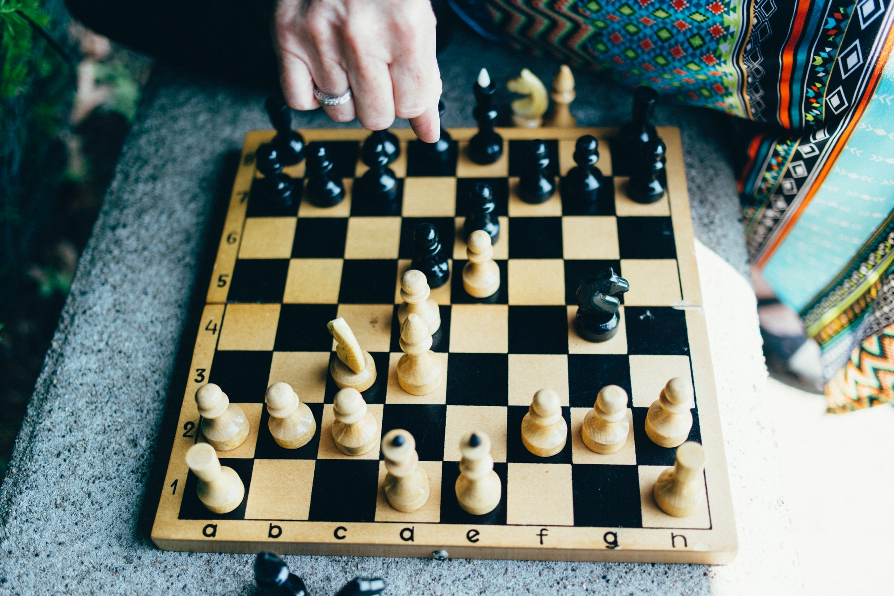

|
Chess is a two-player strategy board game played on a checkered board with 64 squares arranged in an 8×8 grid.[1] The game is played by millions of people worldwide. Chess is believed to be derived from the Indian game chaturanga sometime before the 7th century. Chaturanga is also the likely ancestor of the Eastern strategy games xiangqi (Chinese chess), janggi (Korean chess), and shogi (Japanese chess). Chess reached Europe by the 9th century, due to the Umayyad conquest of Hispania. The pieces assumed their current powers in Spain in the late 15th century; the modern rules were standardized in the 19th Play involves no hidden information. Each player begins with 16 pieces: one king, one queen, two rooks, two knights, two bishops, and eight pawns. Each piece type moves differently, with the most powerful being the queen and the least powerful the pawn. The objective is to checkmate[note 1] the opponent's king by placing it under an inescapable threat of capture. To this end, a player's pieces are used to attack and capture the opponent's pieces, while supporting each other. During the game, play typically involves exchanging pieces for the opponent's similar pieces, and finding and engineering opportunities to trade advantageously or to get a better position. In addition to checkmate, a player wins the game if the opponent resigns, or (in a timed game) runs out of time. There are also several ways that a game can end in a draw. |
 |